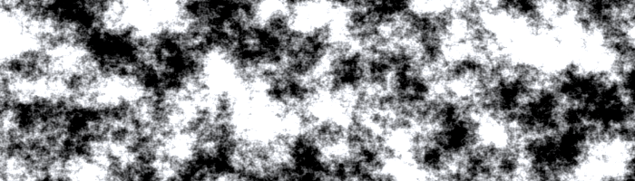

Maps
This week I'm starting on a new project based on maps. I had previously worked on a Unity3D project featuring procedurally generated terrain, and I want to shrink that down a dimension and focus on 2D representations of a map.
Another inspiration comes from the beautifully done flocking simulation on the three.js examples site. It's incredible how fast a graphics card can perform a nearest neighbor search on thousands of objects and still have the result rendered in realtime. Trying to do that in the cpu would be an absurd lagfest.
In this project I'm going to use the gpu to generate coherent noise. The noise library that I used previously was libnoise, specifically a C# port of it. Profiling the terrain generation revealed that generating the perlin noise was a huge bottleneck for the terrain. Getting a heightmap of size 1024x1024 took about 500ms per octave. This compounded with multiple octaves so that 10 octaves of noise would take a full 5 seconds to generate.
While it was slow, I was able to mitigate the lag by running the generation in a background thread. It was much more helpful to generate small pieces of terrain than to build up a whole chunk all at once. Still, this was a less than satisfactory solution and it kept bugging me how slow the noise was. I did also try simplex noise which is claimed to be faster and of higher quality than perlin, but the same bottleneck appeared.
I did some research and came across Brian Sharpe's blog. He does some fantastic work with analytical noise derivatives, and writing noise algorithms to run on the gpu. There is also a Unity forums member called jesta who released some shader implementations of Sharpe's algorithms.
There were a couple limitations with his code however. He uses a surface shader to color the rgb of the texture, but I decided to write my own vertex/fragment version of it. There is a small performance overhead in Unity's surface shaders, and in the spirit of getting noise to run as fast as possible, I wanted to try and reduce it. Another limitation is that his shaders only handle one noise type each, and I wanted to customize it for flexibility in calculations and output, which I'm vaguely saving for another day.
At first it seems to produce some good results! However further tinkering around showed that there are some issues with the noise. Sharpe uses a fast 32 bit hash function of the form:
hash = mod( x * x * y * y, SOMELARGEFLOAT ) / SOMELARGEFLOAT
The worrying part is choosing the large floats. Sharpe did mention that these values had to be hand-picked, but I want a way to generate noise without this limitation. Using other values created areas with noise artifacts and/or tearing seams caused by the hash. One benefit to the libnoise implementation was the freedom of choosing a seed value, but trying to modify the SOMELARGEFLOATs as seeds produced some ugly results.
For now, I'm going to just use the "good" hand-picked values, but I'd like to investigate other ways of seeding the noise algorithm sometime in the future. Next up, I'm going to try and use the noise implementation to generate a heightmap for the terrain.